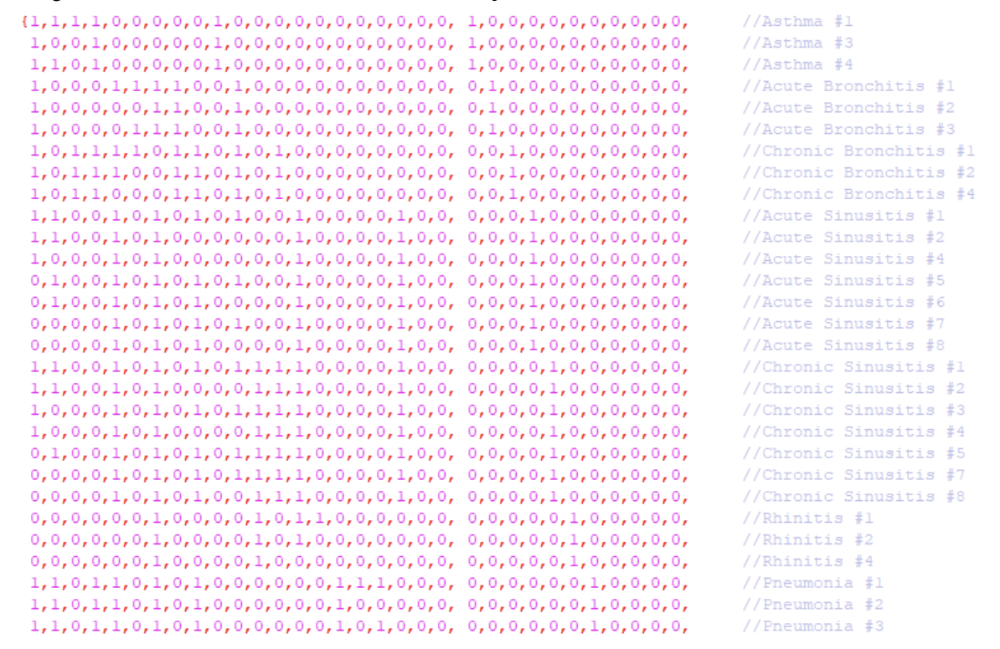

This project has been created to develop a program using Multilayer Perceptron (MLP) to find an accurate diagnosis of respiratory disease from the symptoms presented by the patient. A MLP is a class of feedforward artificial neural network, also it consists of at least three layers of nodes: an input layer, an output layer and a hidden layer.
About finding the disease that most closely matches the symptoms presented by the patient, the program asks twenty-one questions to the user to get the system inputs. The symptoms are in our database, which differentiate each disease. Thus, the user would only answer 1 for yes and 0 for no, if they had the symptom or not. At the end of this, the system returns to the user the respiratory disease corresponding to the symptoms presented, among the eleven respiratory diseases registered in our bank.
These diseases and symptoms are:
1 - Asthma: cough, body pain, wheezing, shortness of breath and is transient;
2 - Acute bronchitis: cough, mucus sputum, bronchial narrowing, malaise, sore throat and headache;
3 - Chronic bronchitis: cough, wheezing, shortness of breath, expectoration of mucus, sore throat, fever, headache and is long lasting;
4 - Acute sinusitis: cough, body pain, mucus expectoration, malaise, fever, headache, nasal obstruction and facial pain;
5 - Chronic sinusitis: cough, body pain, mucus expectoration, malaise, fever, headache, runny nose, long duration, nasal obstruction and facial pain;
6 - Rhinitis: malaise, runny nose, nasal obstruction and sneezing;
7 - Pneumonia: cough, body pain, shortness of breath, mucus expectoration, malaise, fever, mental confusion, chills and coughing up blood;
8 - Tuberculosis: cough, mucus sputum, malaise, fever, long-term, bloody cough, weight loss and night sweats;
9 - Pulmonary emphysema: cough, shortness of breath, expectoration of mucus, narrowing of the bronchi, malaise and weight loss;
10 - Pertussis: cough, shortness of breath, mucus expectoration, malaise, fever, runny nose, long duration, nasal obstruction and sneezing;
11 - Flu: Cough, shortness of breath, mucus expectoration, malaise, sore throat, fever, passenger, runny nose, nasal obstruction and sneezing.
This database was divided into two matrices of 0 and 1, where the first matrix represents the symptoms of each disease in the form of a vector, each of which had only 1 row and 21 columns, one disease and eleven symptoms. composing an 11x21 matrix, in the second matrix we assigned an index to each disease in binary form, but with 11 digits, as there were eleven diseases, so the matrix was 21x11, as can be seen here:

This database needed to have its basic structure modified to have more possibilities of variations of the same disease, so for this reason I could have greater precision and more adequate training, enabling the machine to identify diseases that it never saw in its database, being attributed thus more vector lines of the same disease, so we worked with a base of 60 samples, 49 for training and 11 for testing.
Code explanation!
Sigmoid Function is the activation function, so I put it in:

The learning rate is the constant that tells you how fast the network converges, or rather how fast it changes weights. I define it as 0.01.
Iterative mode changes the weights for each sample. It is represented as follows:

The code was made with three hidden layers because if it had more than that the error value, which is in the gradient, is lost because of the large numbers of layers. As a code example, I show the backpropagation of the part with a single hidden layer (the simplest still MLP):


Best Convergences:
A hidden layer: 15 neurons; 40000 times; 10^(-4) MSE in training; 10^(-3) MSE in testing
Two hidden layers: 15 + 8 neurons; 50000 times; 10^(-4) MSE in training; 10^(-3) MSE in testing
Finally, I obtained great precision in the results, with a mean square error (MSE) in the range of 0.001 and an accuracy of 99,999 (that's an excellent value!). As we can see in the image below, I have the 11 tests that were made to verify the accuracy of the machine to evaluate symptoms never seen by the database, because the vector of these symptoms was removed from the database and placed only for tests, but that characterized that disease to find out if for that entry actually matches the expected disease.

To put it better: we have in the first line the input vector of the test symptoms, then we have the expected disease for that symptom, right after leaving the system and therefore the remaining tests for the rest. Soon after these results are presented, the user is asked to answer the symptom questionnaire to get their specific disease.